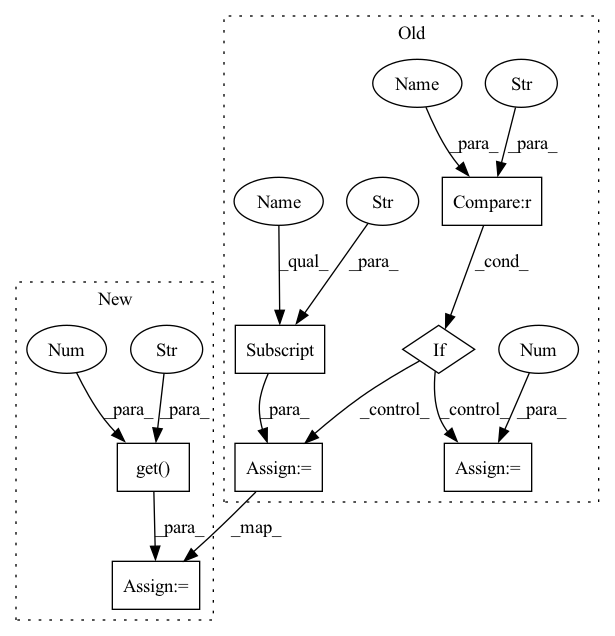

Pattern ID :1463

Before Change
assert kernel_size % stride == 0, "kernel_size is expected divisible by stride"
// Encoder-decoder
if "in_channels" in kwargs:
self.in_channels = kwargs["in_channels"]
else:
self.in_channels = 1
self.n_basis = n_basis
self.kernel_size, self.stride = kernel_size, stride
self.enc_basis, self.dec_basis = enc_basis, dec_basis
After Change
assert kernel_size % stride == 0, "kernel_size is expected divisible by stride"
// Encoder-decoder
self.in_channels = kwargs.get("in_channels", 1)
self.n_basis = n_basis
self.kernel_size, self.stride = kernel_size, stride
self.enc_basis, self.dec_basis = enc_basis, dec_basis
In pattern: SUPERPATTERN
Frequency: 3
Non-data size: 7
Instances
Fragment ID: 2693043
Project Name: tky823/dnn-based_source_separation
Commit Name: 0ff135c407c92ffb13ada40f973ec30729eb3f32
Time: 2021-11-12
Author: delta9guitar97@gmail.com
File Name: src/models/conv_tasnet.py
Class Name: ConvTasNet
Method Name: __init__
Parent Class: nn.Module
Fragment ID: 2693042
Project Name: tky823/dnn-based_source_separation
Commit Name: dd64f978a6a42fcc4061763b753cd1442c3c542c
Time: 2021-11-12
Author: delta9guitar97@gmail.com
File Name: src/models/tasnet.py
Class Name: TasNet
Method Name: __init__
Parent Class: nn.Module
Fragment ID: 2693044
Project Name: tky823/dnn-based_source_separation
Commit Name: 0ff135c407c92ffb13ada40f973ec30729eb3f32
Time: 2021-11-12
Author: delta9guitar97@gmail.com
File Name: src/models/dprnn_tasnet.py
Class Name: DPRNNTasNet
Method Name: __init__
Parent Class: nn.Module